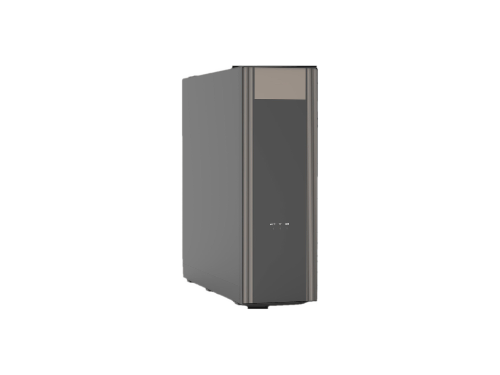
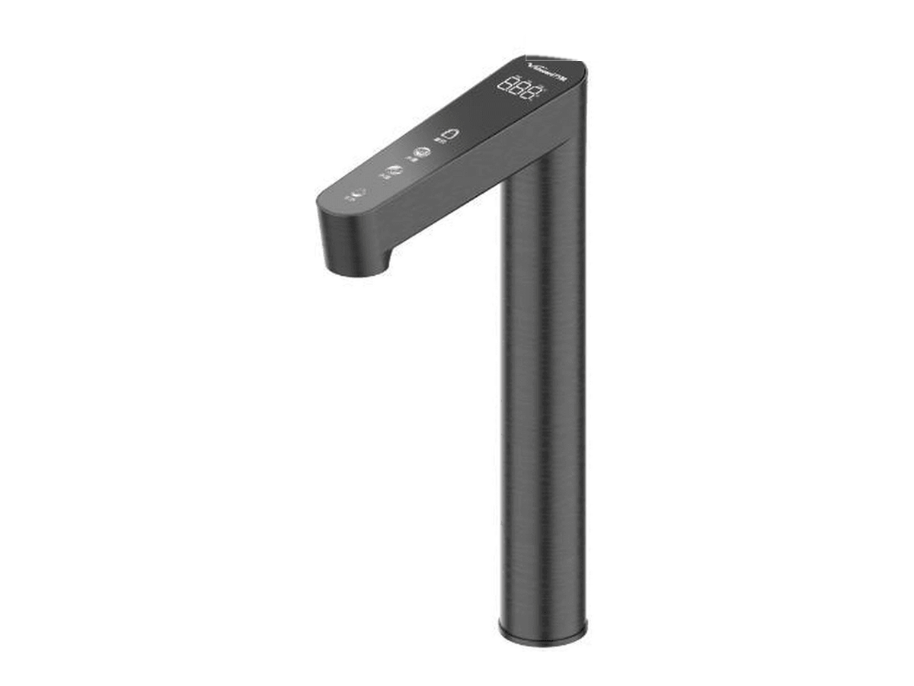

シンク下設置型
シンク下設置型RP-U07
400～600 GPDシンク下RO浄水器
SKU: RP-U07
MOQ：お問い合わせ時に確認
以下はすべて確定カタログモデルです。候補モデルはここには掲載していません。
46モデル
検索に合うモデルがありません。別のSKUで試すか、フィルターをクリアしてください。
温水／冷水／製氷は、既存モデルの厳選ビューです。利用可能な機能はモデルにより異なります。
シンク下設置型400～600 GPDシンク下RO浄水器
SKU: RP-U07
MOQ：お問い合わせ時に確認
 シンク下設置型
シンク下設置型貯湯式加熱付きシンク下RO
SKU: RP-U08
MOQ：お問い合わせ時に確認
 シンク下設置型
シンク下設置型大容量前面アクセスRO浄水器
SKU: RP-U09
MOQ：お問い合わせ時に確認
 シンク下設置型
シンク下設置型3カートリッジRO浄水器
SKU: RP-U11
MOQ：お問い合わせ時に確認
 シンク下設置型
シンク下設置型工具不要の引き出し式カートリッジROシステム
SKU: RP-U01
MOQ：お問い合わせ時に確認
 シンク下設置型
シンク下設置型デュアルドライブ大流量ROシステム
SKU: RP-U06
MOQ：お問い合わせ時に確認
 シンク下設置型
シンク下設置型コンパクト2カートリッジRO浄水器
SKU: RP-U12
MOQ：お問い合わせ時に確認
 シンク下設置型
シンク下設置型スリムなデュアルアウトレットRO浄水器
SKU: RP-U14
MOQ：お問い合わせ時に確認
 シンク下設置型
シンク下設置型シンク下設置型水素水RO浄水器
SKU: RP-U04
MOQ：お問い合わせ時に確認

シンク下設置型瞬間加熱蛇口と冷水付きRO
SKU: RP-U02
MOQ：お問い合わせ時に確認
 シンク下設置型
シンク下設置型大容量家庭用RO浄水器
SKU: RP-U03
MOQ：お問い合わせ時に確認
 シンク下設置型
シンク下設置型コンパクト2カートリッジROプラットフォーム
SKU: RP-U05
MOQ：お問い合わせ時に確認
 シンク下設置型
シンク下設置型シンク下設置型冷却ユニット
SKU: RP-U15
MOQ：お問い合わせ時に確認

シンク下設置型ステンレス製瞬間加熱蛇口
SKU: RP-U16
MOQ：お問い合わせ時に確認
 シンク下設置型
シンク下設置型ツインハウジング大流量プレフィルター
SKU: RP-U17
MOQ：お問い合わせ時に確認
 卓上型
卓上型加熱ジャグ付きRO浄水器
SKU: RP-C07
MOQ：お問い合わせ時に確認
 卓上型
卓上型オールインワンカートリッジ卓上浄水器
SKU: RP-C08
MOQ：お問い合わせ時に確認
 卓上型
卓上型製氷・温水・冷水付きRO浄水器
SKU: RP-C09
MOQ：お問い合わせ時に確認
 卓上型
卓上型コンプレッサー冷却付き卓上RO
SKU: RP-C10
MOQ：お問い合わせ時に確認
 卓上型
卓上型挽きたてコーヒー付きRO浄水器
SKU: RP-C11
MOQ：お問い合わせ時に確認
 卓上型
卓上型卓上浄水器
SKU: RP-C12
MOQ：お問い合わせ時に確認
 卓上型
卓上型瞬間加熱ROディスペンサー
SKU: RP-C13
MOQ：お問い合わせ時に確認
 卓上型
卓上型設置不要の瞬間加熱浄水器
SKU: RP-C03
MOQ：お問い合わせ時に確認
 卓上型
卓上型取り外し可能なジャグ付き瞬間加熱RO
SKU: RP-C01
MOQ：お問い合わせ時に確認
 卓上型
卓上型卓上型水素水ROディスペンサー
SKU: RP-C04
MOQ：お問い合わせ時に確認
 卓上型
卓上型炭酸水シリーズ — 2バリエーション（RP-C14 / RP-C05）
SKU: RP-C14
MOQ：お問い合わせ時に確認
 卓上型
卓上型炭酸水・水素水卓上ファミリー（P90 / P90-1）
SKU: RP-C15
MOQ：お問い合わせ時に確認
 卓上型
卓上型卓上型ヘルスポット浄水器
SKU: RP-C17
MOQ：お問い合わせ時に確認
 卓上型
卓上型ガラスジャグ付きスリム卓上RO浄水器
SKU: RP-C19
MOQ：お問い合わせ時に確認
 卓上型
卓上型コンプレッサー冷却・温水タンク付き卓上RO
SKU: RP-C21
MOQ：お問い合わせ時に確認
 卓上型
卓上型製氷オプション付きビルトイン冷水・温水ディスペンサー
SKU: RP-C24
MOQ：お問い合わせ時に確認
 業務用
業務用自立型業務用ウォーターディスペンサー（A1）— 100G RO・50～100人用・温水／冷水／製氷
SKU: RP-C23
MOQ：お問い合わせ時に確認
 軟水化
軟水化コンパクトシンク下設置型軟水器
SKU: RP-U18
MOQ：お問い合わせ時に確認
 軟水化
軟水化分離タンク式軟水器シリーズ — 32,000 / 48,000 / 64,000グレイン
SKU: RP-W01
MOQ：お問い合わせ時に確認
 シャワー
シャワーハンドヘルドシャワーフィルター
SKU: RP-S01
MOQ：お問い合わせ時に確認
 シャワー
シャワー長方形シャワーフィルター
SKU: RP-S03
MOQ：お問い合わせ時に確認
 シャワー
シャワーマルチモードシャワーフィルター — 4モデル
SKU: RP-S07
MOQ：お問い合わせ時に確認
 シャワー
シャワーポータブルシャワーフィルター
SKU: RP-S10
MOQ：お問い合わせ時に確認
 シャワー
シャワーインラインシャワープレフィルター
SKU: RP-S11
MOQ：お問い合わせ時に確認
 シャワー
シャワークイックロックシャワーフィルター
SKU: RP-S12
MOQ：お問い合わせ時に確認
 シャワー
シャワーシャワーろ過システム — 単体または複数台
SKU: RP-S14
MOQ：お問い合わせ時に確認
 蛇口
蛇口クラシック蛇口フィルター
SKU: RP-F01
MOQ：お問い合わせ時に確認
 蛇口
蛇口360°回転式蛇口フィルター
SKU: RP-F02
MOQ：お問い合わせ時に確認
 蛇口
蛇口カーボンファイバー蛇口フィルター
SKU: RP-F06
MOQ：お問い合わせ時に確認
 蛇口
蛇口フィルター寿命表示付き蛇口フィルター
SKU: RP-F08
MOQ：お問い合わせ時に確認
 蛇口
蛇口蛇口直結型浄水器 — 一体型と分離型
SKU: RP-F10
MOQ：お問い合わせ時に確認
想定される用途、現地の需要、設置要件、確認済みのモデル要件から始めましょう。このカタログは、ポータブル製品の認証や市場規模レポートではありません。ポータブル浄水器市場プロジェクトへの適合性：ご注文ごとに確認いたします。